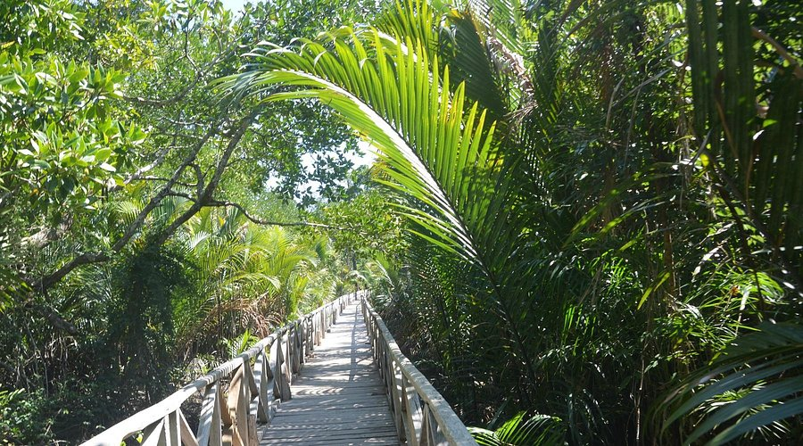

Famous Places
Victoria Memorial Hall
The Victoria Memorial is a large marble monument in the Maidan in Central Kolkata, having its entrance on the Queen's Way. It was built between 1906 and 1921 by the British Raj. It is dedicated to the memory of Queen Victoria, the Empress of India from 1876 to 1901.
Howrah Bridge

The Howrah Bridge is a balanced steel bridge over the Hooghly River in West Bengal, India. Commissioned in 1943, the bridge was originally named the New Howrah Bridge, because it replaced a pontoon bridge at the same location linking the both sides of cities of Kolkata. Burrabazar is connected with Howrah rail terminal because of this bridge. On 14 June 1965, it was renamed Rabindra Setu after the Bengali poet Rabindranath Tagore, who was the first Indian and Asian Nobel laureate. It is still popularly known as the Howrah Bridge.
Tiger Hill
Tiger Hill (2,590 metres (8,500 ft)) is a mountain located in Darjeeling, in the Indian State of West Bengal. It has a panoramic view of Mount Everest and Mount Kanchenjunga together.